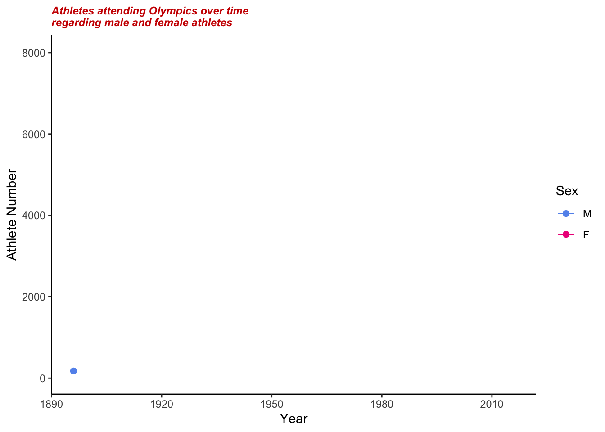

Chapter 6 Interactive component
6.1 Reference Q3: Which countries are the most dominant over the history of Olympics?
6.1.1 Interactive 1
- Simple Tutorial:
This interactive plot choose four Olympics over the years, from Amsterdam 1928, Melbourne 1956, Seoul 1988 and Rio 2016.
Bubble size indicates the attendance volumes of athletes outside the US in every four events. Also, ‘leaflet’ enable the map to zoom up and move to a specific view in this window. I specified the initial view focusing on the European areas.
The lower left corner has a small option buttons to choose the event, and plot will show corresponding popup bubbles.
A little more about this map: The upper right corner of the window has a button, where we could meaure the distances and areas of geographic spots that we might be interested in.
6.2 Reference Q4: What is the Participation Ratio of Men to Women changes over time? Is this ratio increased or decreased?
6.2.1 Interactive 2
This is an animated version of the evolution for female and male athletes attending Olympics over time.

6.2.2 Interactive 3
Scatter-plot of female and male athletes attending Olympics over time.
Labels include the information of country, attending female athletes number, attending male athletes number and female versus male athlete ratio (*100).
Different color indicates different years of the events.
In the Olympics games of 2014 and 2016, the female participants even reached the highest peak.
Overall, as the time increases, the number of Male participants is always less than Female participants, even though the number of Female participants has improved a lot in Olympics.
Even though we have shown increased participation of females in the Olympics movement, not all countries can pay attention to sexism and invest equally in female athletes.
This bubble graph shows the ratio of female athletes versus male athletes from different nations over the 120-year Olympics. The color represents additional years of the Olympics games. The bigger the bubble is, the higher the balance is. From the 1900s to the 1950s, the ratio was relatively small, which meant low participation of females. Since the 1960s, there has been a dramatic improvement in female participation.
In 2014 and 2016, gray bubbles reached the biggest, representing that the female participants reached the highest peak.